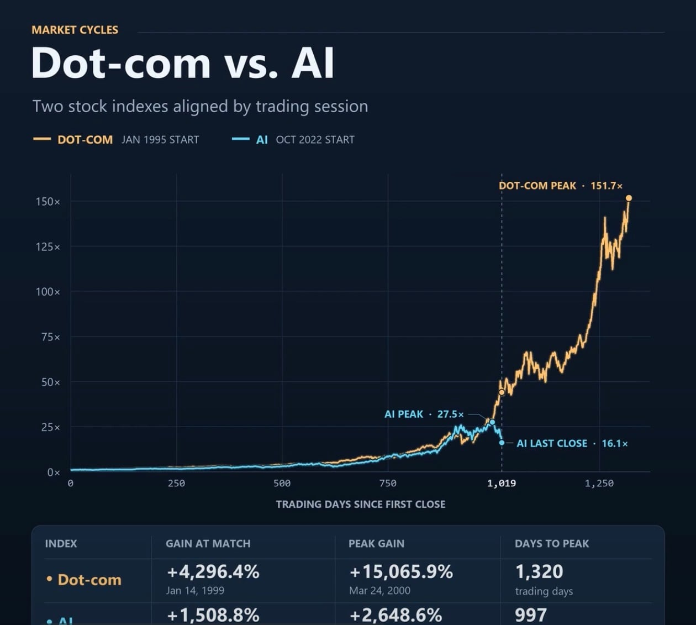

닷컴버블 비교 시각화한거
버블이라고하기에는 진짜 찍싸고 폭락함;;
버블버블 팝팝거리면서 애널들이 폭락시키면 큰손들이 싸게사는걸수도..

닷컴버블 비교 시각화한거
버블이라고하기에는 진짜 찍싸고 폭락함;;
버블버블 팝팝거리면서 애널들이 폭락시키면 큰손들이 싸게사는걸수도..
버블의 사이즈가 다른거지 들어간 투자비용 대비 생산품이 투자비용 이상으로 돌아와서 선순환구조 만드는데 성공하거나 적어도 현상유지를 돌릴수 있으면 버블이 아닌거고, 그게 안되면 버블인거지. 전문가들이 걱정하는건 ai가 무쓸모다가 아니라 현재 쏠린 투자자본의 회수가 가능할 정도의 생산성을 자본이 마르기전에 보여줄수 있느냐임.
물리셨고
어디서 또 이상한 짤을 주워왔대
저 기간에 나스닥 7배 올랐는데?
버블버블 팝팜 하면서 애널을 큰손이 싸게 뭐..?
큰손으로 사정없이 싸게해주겠다
시장에서 ai 빅테크 주식들이 차지하는 비율이 지금 40% 가까울텐데 이 자체만으로는 버블 시기랑 비슷하거나 넘었음
22년보다 거의 2배 늘어난건데 여기서 더 늘어나기 쉽지 않지
그래서요?
닷컴버블 시작점을 너무 앞으로 잡은거 아님?
이거보고 안심하고 기둥에 스스로 묶였다
다들 나가있어봐


들어가는 비용이나 조건 자체가 너무 차이나서 그런 거 아니냐
하.. 닷컴 버블떄 크게먹은 사람 부럽다
그 부가 계속 이어졌을듯..
닷컴버블때 크게먹은 사람들은 그 전부터 이미 큰손이엇을것임….
한글과 컴퓨터 .... 저점에서 고점까지 125배 오름.. 굳이 큰손 아니더라도 500만원 천만원만 투자했어도.. 갑자기 부자되는거지....
그때 오백 천이 작은돈이 아님…
그리고 버블때 크게먹은 사람글이 125배 다먹고 이런사람글 잇겟지만 소수지… 소수나 버틸수잇고.
대부분은 그거 못버팀. 엔비디이 다먹은 사람 있겟지만 그거 다먹은사람 거의없음. 여윳돈으로 넣고 잊어야 다먹는거임.
최근에도 코스피 주가 3배 뛰었었지만
주위에는 돈 잃은 사람들만 넘쳐남
돈번 사람들은 아닥하고 있는거야. 두들겨 맞거든
500배를 먹은사람은 필연적으로 다 잃을수밖에없음, 안그러면 500배를 못먹거든
영화 도둑들 생각나네 ㅋㅋㅋ 김윤석이 80만원 들고 카지노 가서 3일만에 88억 만들고 하루만에 다 잃었다고 이야기함. 그걸 듣고 전지현이 88억 땃을때 딱 일어서야지라고 하니까 김윤석이 그런성격이면 그돈 못먹는다고 대답하는 장면. 인상적이었음 ㅋㅋ
주식 몇번만 해보면 깨닫게 되는거지
버티는 사람은 고점찍고 내려가도 안팔고
단타는 뭐 쫌만 오르면 팔면서 깔짝거리는데 크개 먹을리가 없지
근데 사람들은 저점에서 사서 고점에 파는 헛된 꿈만 꾸고 있음
로또는 10만배는 먹는건데
그거랑 비슷한거임
다 청산당해서 누군가 크게먹은거
닷컴버블의 수준으로 막나가는거면
코스피 3만은 찍어야됨
닷컴버블은 이세상에 아예 존재한 적 없던 인터넷 가상공간이 창조되면서 발생한 빅뱅이고
AI는 그 인터넷 가상공간에서 발생한 초신성 폭발 정도라.
신대륙 발견이면 ㅇㅈ이지ㅋㅋㅋㅋ
구조대 불러도 안와 ㅋㅋ
닷컴버블 직전에도 이런 개소리했었지
미국이 기준금리 4.5~4.75까지만 가도 초토화 난다
이젠 푸틴한테 빌어야 할판
냉정하게 말해서 인터넷 vs AI 하면 이게 상대가 안됨
인터넷이 없던 그 당시에 전세계가 하나의 네트워크로 모든 정보에 접근가능하고 공유된다는 그 파급력이 어느정도였는지 지금에 와서 체감하기 힘들어서 그렇지 거의 신세계 창조급이였음
ai는 굳이 비교하자면 그 이후에 나온 스마트폰 혁명 정도급이지 인터넷과 비교를 하면 안된다고 봄
맞지.. 인터넷은 전세계 삶의 수준을 수직상승시킨 대혁명이고 ai아직 업무보조수준임. 피지컬 ai사실상 기계공학발달이 먼저고.. 아직 발열도 못잡아서 드라이아이스 처넣으면서 무슨 ㅋㅋ
닷컴 뽕맛은 어땠을까? 느껴보고 싶다
ai 부정론은 서울 부동산 폭락론과 같은 거임
꿀 빨 사람들은 계속 꿀 빨거고 그 차이는 점점 저 벌어지고 어느 날 눈 떠보면 따라잡을 수 없을만큼 벌어져 있을거다
AI가 임펙트가 상대적으로 떨어지는건 아니고, AI주도주들은 이전부터 체급이 컸었어서 그럼.
닷컴버블=돈버는 회사가 크게안보임
지금은 돈 존나버는회사가 있음
둘다 비교불가임
그리고 닷컴때는 창고에 컴퓨터 몇대 쳐박아놓고 ㅇㅇ닷컴이지랄로 상장시도하고 이런 경우도 많았는데
지금은 에초에 인공지능, 데이터센터로 시장진입하는거 자체가 장벽이 너무 높고, 실제로도 데이테센터라는 유형자산은 남아있으니 이런 지점도 크게 다르다고 봄.
버블이라는게 결국 가치대비 효용이 적은게 드러나서 터지는거 아닌가
ai효용성은 엄청난 것 같은데
시장은 계속 근데 그정도인가? 지금 이렇게 돈을 퍼부어서 당장 감당이 되나?하면서 간보는중인듯
이제 쏘나요? 빨리 쏴주세요
원래부터 it공룡들이 시작한거라 시작점을 닷컴이랑 동일하게 잡는게 에바지
힘내라